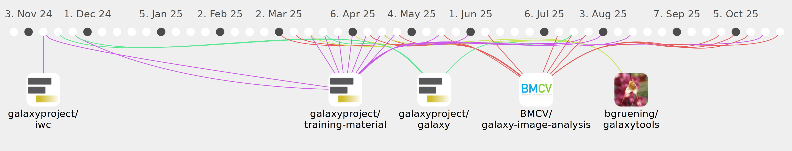

kostrykin

Commits all-time: 842
Commits last year: 369

(246)
- e1779d1
- b253298
- b938c0c
- ea5f99a
- d2e9407
- c519e32
- 60d2cf1
- eff3145
- 8ddf3d7
- b74f0ab
- d83e812
- 8049431
- 45989d2
- e333e7e
- 5ed6d14
- 3df235c
- a7267a0
- 14b03f9
- fe6b267
- 549b1d6
- 26ae3bb
- f105236
- 9781763
- ce14c65
- ae760fe
- c9c10fb
- ab06a4d
- 6152e9f
- 007f066
- 6d2c722
- e7d7ea5
- f6f5cce
- 521ecfc
- 78614a9
- 1c4cb41
- 3a186df
- 2f6f44c
- 7111a40
- 6901ede
- 3061bdc
- 48df7d9
- c842300
- d61fdbe
- 4a5c43c
- f8dc3c8
- 9a40a5d
- 7a50372
- 1775e3d
- fd31d50
- bde3b3b
- fc82348
- 8251c60
- 32859a5
- fc5bea1
- 2302dd3
- 2ff7d46
- 70d94f8
- ffd5d7c
- 0134360
- b93a415
- 7ceeeb3
- 1af394f
- 6740658
- 87d5c62
- f006740
- 975fa4a
- 8065f89
- c756739
- 07fdc77
- f2bfb41
- 1e20720
- 0c170d3
- f20ae63
- e79e7a2
- b45c6da
- 1bf4240
- b413578
- 392d956
- 5aba442
- b07b2e4
- 794cd26
- ff603a3
- 80df009
- 1d86bc6
- 25a5e0a
- d084c35
- 743de88
- cc4be67
- c504afd
- 23396e4
- 413fc6f
- dc46eb4
- e236efa
- af9aa23
- d566176
- f60786a
- 76ea79c
- 17aff63
- 4655ade
- edac062
- 4a235e1
- 1d647d8
- 254a7cb
- 4367f4e
- c071685
- a11042f
- 9f8f506
- 871b6aa
- fde0c72
- e797a69
- e85f811
- 54587be
- 7efce07
- 4573c7c
- 60a63e8
- fda0681
- 149f981
- 7dd0845
- c3ac22c
- 36747a6
- 0565c79
- c9aad7e
- adb57e2
- a9c28c7
- 95bda12
- 9bb62c8
- af67304
- 1936856
- cc3f4ac
- b7913df
- 8c2699f
- e8f005d
- 4491972
- bd94835
- 25082f3
- 6a1c05d
- bc2a647
- 79b981f
- 0ce2588
- 747554d
- b765ae7
- 772c6ee
- a7244e5
- 94eb478
- 5590095
- 8792f8a
- e64a9f4
- 23b7fab
- 2391270
- 94ca9cf
- 2f691fe
- 0e3c7d4
- 6ef2fe6
- a438066
- 941a6c2
- e5c135c
- 509156b
- 23a2442
- 4ceacce
- 216515b
- b681058
- 5ef6711
- 5e452f1
- a94f04c
- a6fd77b
- 4dcbf29
- 85b0f6a
- cd90893
- 5961ce6
- a0b9295
- ee45277
- bd3a982
- ab51862
- eb2d2a8
- 8e99ddb
- cb6024d
- 285c593
- 49bfc49
- 4afe001
- 597cb3d
- fac9e5f
- f60818a
- 2c079a9
- c9cc62c
- c2d55c4
- c3c548d
- 49c4017
- b4b4824
- 3a064f9
- 61cfd40
- f5a4de7
- 71f7eca
- 97e1471
- ae489da
- bb2d58e
- a8dabbc
- e9a4942
- d95da35
- dc7e4cb
- 96cd7ca
- 2b457a8
- 5bf032c
- 20db59f
- 6f0441e
- dd95f63
- a49627f
- 05f00e4
- c20c8e4
- b8e0b65
- ca4da88
- 8db917a
- 010f466
- 232ad12
- 3cb4c77
- 9abf60f
- 55c977e
- 52a9510
- 3164d92
- 5271c5c
- a01d730
- 1d8171c
- 4a733c8
- 529b1ae
- 84904ee
- 4c6542e
- 99d6ebe
- 74bcaa9
- f3e2ca5
- 5462d92
- d1da43a
- dd85d81
- 13f2ed9
- d5c52e9
- 94fc679
- eca22ee
- cb3e83b
- f6c8b73
- da8c1d8
- 89a87fd
- b5ca32e
- 86cf7f8
- 109057a
- 39afe3e
- 616653a
- d12bb8d
- a555704
(74)
- 2437ab5
- 32f25a6
- ebe5bde
- f3ded28
- 2c2efe8
- eb9ed52
- 3a7ae0e
- 61aaebf
- 98f21ae
- b638beb
- d07ee47
- 62a0f83
- 2c233ac
- 3d881ae
- f4aef13
- 9f24994
- 77a8f6e
- 8a71919
- 65e5ed0
- c3a8a42
- 46f1b29
- b588776
- 22319a1
- 09b9d08
- 2d31ca7
- 79f2544
- d8e1b2d
- f08ae16
- 24b2355
- a156850
- 8c812e1
- bcf27d7
- 1842d52
- 4c76831
- 6e0d82a
- fadcf16
- 2f95de3
- 259af30
- 4483514
- 7f297f0
- 0b91971
- 32e21b3
- 017babf
- 09d6b2f
- c0282e2
- e020ad9
- 57970fc
- b143d8f
- e917233
- 75df743
- 21a1e08
- 96db3d0
- af80ed8
- b9f7d1f
- 2ef61f4
- aced46f
- 96a647c
- 2c50f81
- 569174b
- 9042ad8
- 3d60cd6
- 11cf6fd
- 486e55e
- c0f025b
- d3cea5e
- 07afc10
- 329d130
- 1abfd2c
- e804ade
- 4b1a884
- 28e3b1c
- ca43aed
- 26bece8
- 1d7a944
(39)
- 9fa8e36
- e92ca6d
- 9e217e2
- 2c6d6db
- 5807d63
- c276d5e
- 10cc923
- c50b88d
- 54e41c5
- d60423e
- 47753f3
- 09d2fc7
- 1c9a463
- 11a7402
- 30fe7ee
- 653fd40
- 9fea14d
- 152a90c
- e84800b
- 27fbf2a
- fc6fd8d
- 13189e9
- 29b81e0
- a6e855d
- 4321f38
- 9b00995
- 77d3353
- 9b97684
- 0672730
- 45d583f
- ce35c2c
- c2be44d
- 496d456
- 7ef3e7d
- 9392e36
- 5757b41
- af239db
- df3c16e
- b1a84ba
(10)